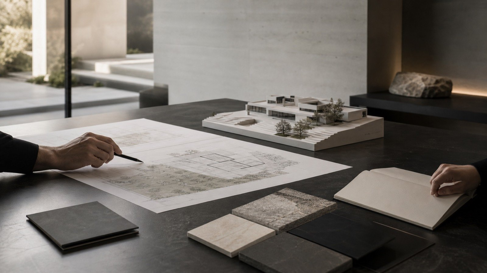

Step 01
Listen
Every project begins with understanding. We start by listening carefully — to the client’s vision, lifestyle, priorities, site conditions, and long-term aspirations.
This first stage builds the foundation for everything that follows. It allows us to define the architectural direction with clarity and purpose.
- Vision
- Lifestyle
- Site
- Brief
- Intent
